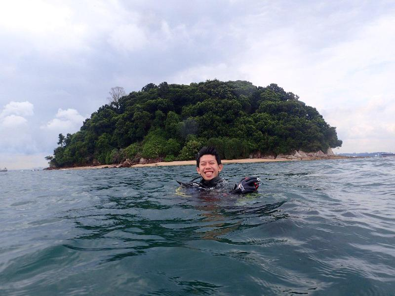

|
 |
Samuel CHANHonours Student
Email: samuelchan(AT)u.nus.edu |
Honours Project
I am investigating the biodiversity of intertidal echinoderms and the characteristics of the environment they are found in, with two main focus areas. First, I will seek to identify intertidal echinoderms on the shores of Singapore, quantifying their diversity and abundance. Then, I will seek to quantify the habitat characteristics and ontogenetic shift of Archaster typicus, as one representative of the echinoderm population in Singapore.
This will ideally be used to identify habitats of interest for conservation of echinoderms, many of which are threatened in Singapore. The high diversity of echinoderms and their presence in a large variety of marine ecosystems highlight their importance, with many species playing important roles in shaping ecological consequences, especially within coral reef habitats.
Background
I am an undergraduate pursuing the Bachelor of Environmental Studies at the National University of Singapore. My areas of interest revolve largely around the ecology of our intertidal and marine biodiversity, and the use of these to aid in conservation of these species and habitats within Singapore.